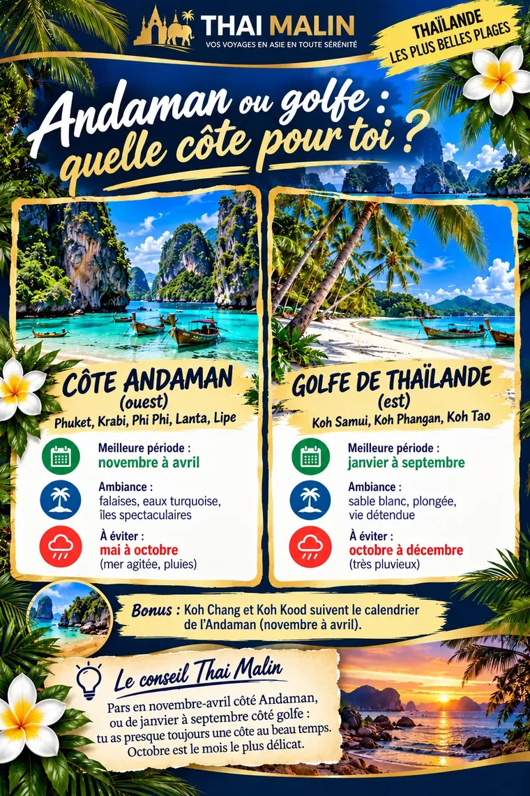
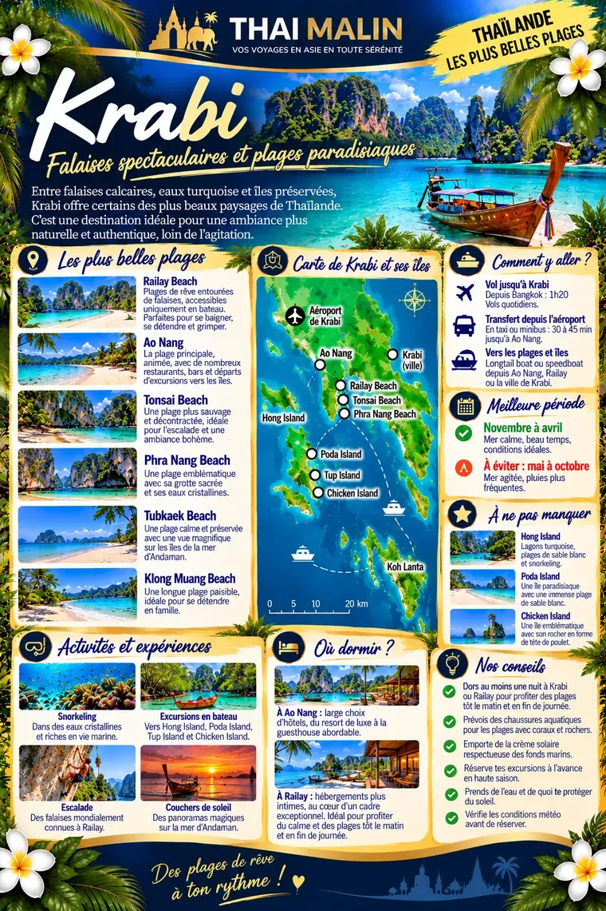
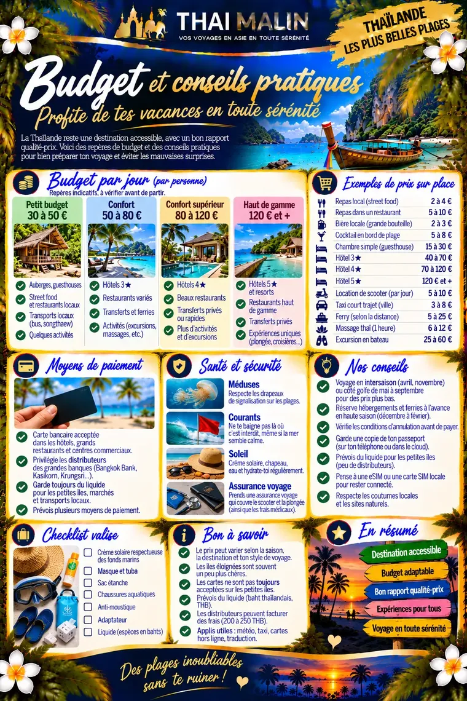

🏖️ Mini-guide Plages de Thaïlande
Édition 202624 pages6,99 €Les plus belles plages, île par île
Voici 3 pages du guide, en entier et gratuites. Choisis d’où tu pars, et touche une page pour l’agrandir.
Andaman ou golfe : quelle côte pour toi ?Aperçu 1/3

Krabi, falaises et plages paradisiaquesAperçu 2/3

Budget et conseils pratiquesAperçu 3/3

Il reste 21 pages à découvrir
Dans le guide complet :
- Phuket, Phi Phi, Krabi, Koh Lanta
- Koh Samui, Phangan, Tao
- Koh Lipe, Koh Yao Noi, autres îles
- Snorkeling et plongée
- Météo des plages mois par mois
- Transports et où dormir par zone
- Quiz des plages secrètes
1Tu paies en ligne, de façon sécurisée (Stripe).
2Tu reçois ton code par e-mail, tout de suite.
3Tu ouvres le guide sur ton téléphone, même hors ligne.
 Thaïlande
Thaïlande Vietnam
Vietnam Laos
Laos Cambodge
Cambodge